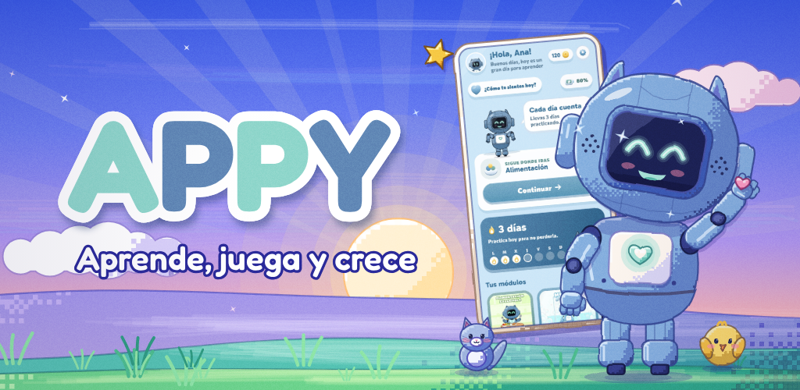
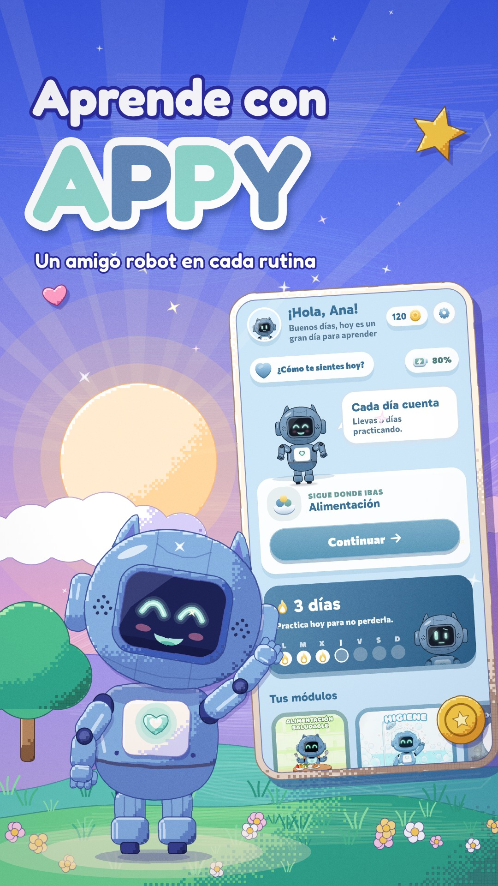
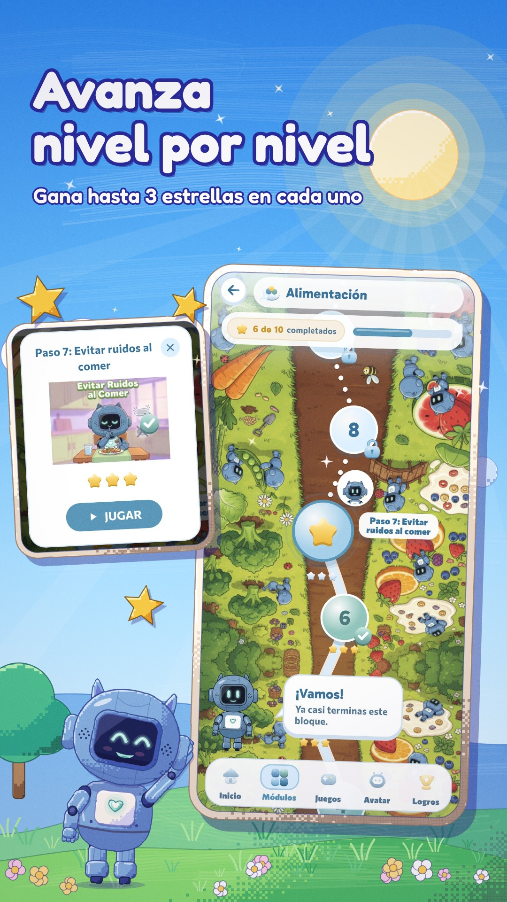
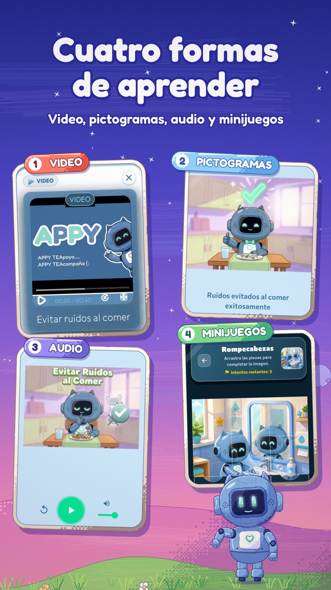
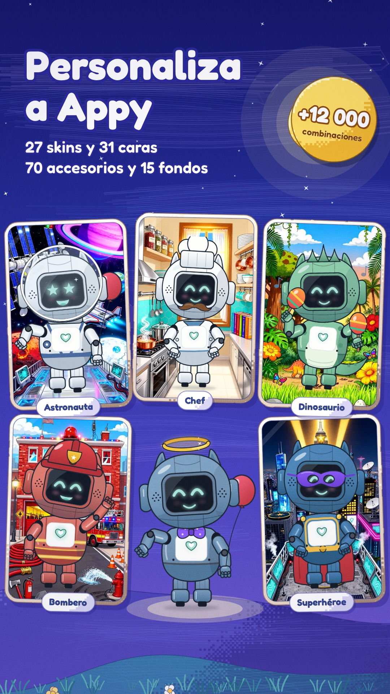
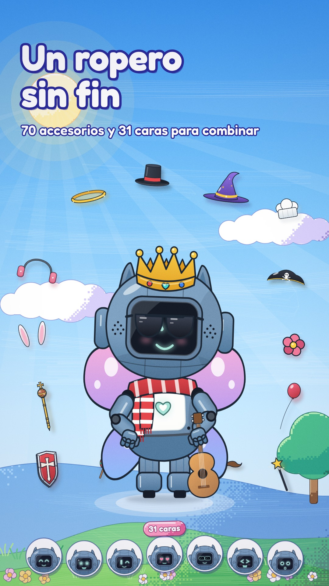
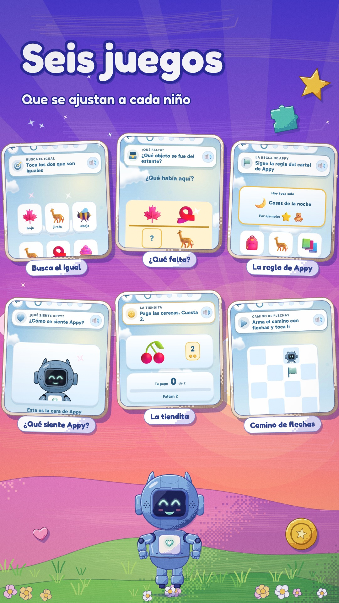
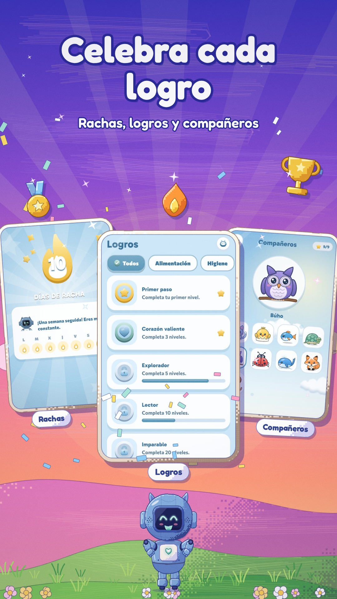
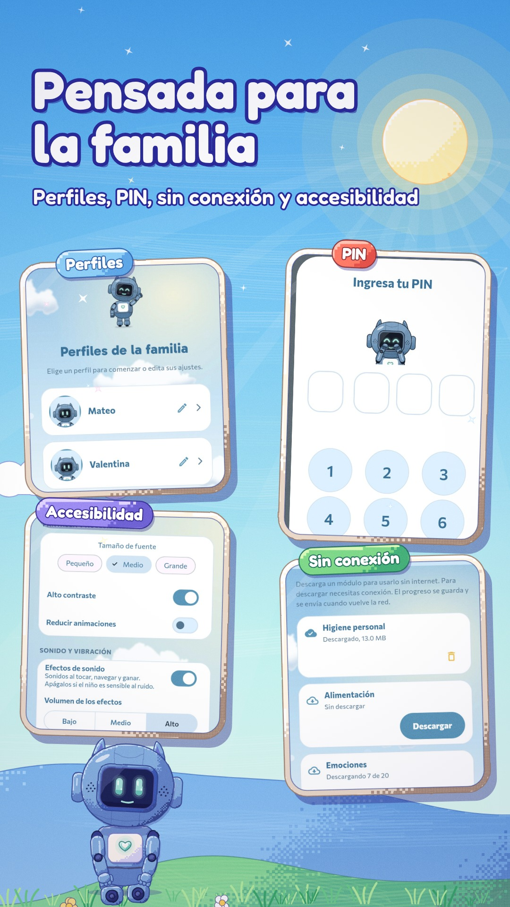

← Todos los proyectos
Proyecto / 01
Appy
Aprende, juega y crece
Aplicación educativa para niños y familias. Appy acompaña el avance con actividades, juegos, niveles y opciones de personalización.

01 / Propósito
Una idea llevada a la práctica.
Proyecto de equipo; repositorio de desarrollo bajo FertronicPRO.
Áreas y tecnologíasFlutter · Android · Firebase
Esta ficha presenta el alcance documentado y material visual seleccionado. El código de desarrollo y los datos privados permanecen fuera de esta vitrina.
02 / Lo que hace
Funciones principales
- Aprendizaje por niveles con distintas formas de presentar el contenido.
- Minijuegos, rachas y celebraciones del progreso.
- Personalización de Appy y funciones pensadas para la familia.
03 / Vista del proyecto
Así toma forma.
Imágenes promocionales provistas para la ficha de Appy. Representan pantallas y funciones del producto; algunas composiciones son piezas de presentación.








04 / Explorar